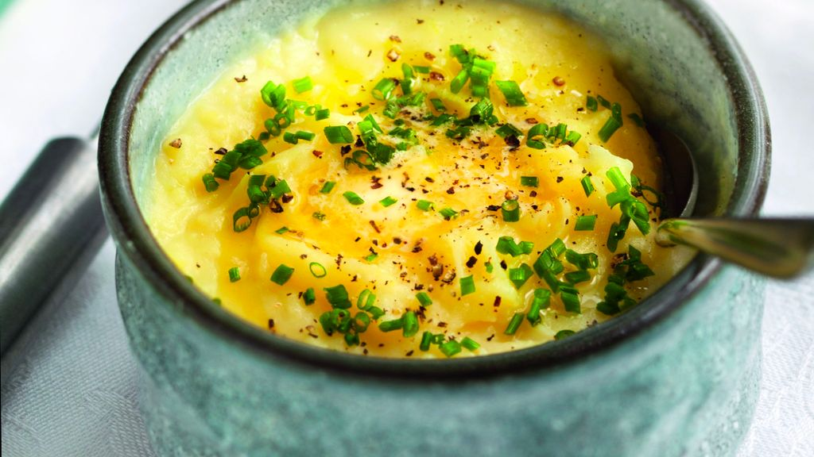

Mashed potatoes
 4 servings
4 servings 70 mins
70 mins Source
Source Veggie
Veggie Salty
Salty

1 kgPomme de terre (chair tendre, variété pour purée)
Epluchez et coupez les pommes de terre en morceaux.
Mettez-les à cuire dans un grand volume d’eau salée jusqu’à ce que la pointe d’un couteau rentre facilement dans la chair. Passez-les alors au moulin à légumes.
20 clLait- Crème fraîche
- Muscade
Ajoutez le lait pour délayez jusqu’à la consistance souhaitée, la crème fraîche pour l’onctuosité et un peu de muscade râpée.